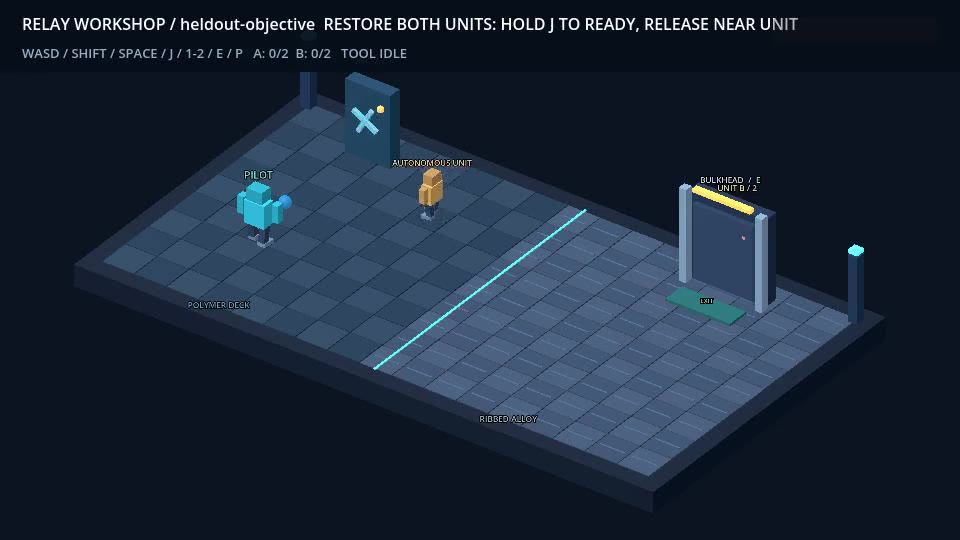

原始试玩，没有事件答案
四段各60秒的连续有声录像。独立与并发操作、短按与长按、成功与失败、门与设备变化都混在场景中；不提供逐事件标签、按键日志或分轨。
只有连续有声试玩，声音入口留空，音效资产也未提供。为一个可玩的检修关卡制作声音，再把对象、状态和结果接成可交互的系统。
试听参考与模型结果 ↓
工程交付完成。Qwen自动初评 66.1 / 100，可信度低、正式分待定。评分通道未通过静音校准，不能据此断言题目难度已验证。
初评分范围与限制 ↗检修与通关 · 25秒 · GPT-6.2 Sol实际引擎输出 · 原始增益
四段各60秒的连续有声录像。独立与并发操作、短按与长按、成功与失败、门与设备变化都混在场景中；不提供逐事件标签、按键日志或分轨。
Godot原生关卡包含角色、两台设备、工具、隔离门和通关逻辑。模型要判断谁在发声、状态怎样改变声音，再自行制音、加工或检索合法素材。
完整声音工程、实际引擎预览、制作脚本与参数、素材来源和许可。验收重组已展示行为，检查实时因果；沿固定录像时间播放音轨不能完成任务。
这是组织者自建的灰盒任务与程序合成参考，模拟技术音频设计师接入关卡的工作；并非真实商业工程遗失记录。原声可抽取加工，也可采用合理等效的新设计。
Qwen3.8 Omni Flash自动初评 · 低可信度
正式／认可验收分：未定
| 维度 | 初评分 | 满分 |
|---|---|---|
| A · 音画关系和信息反馈 | 19.85 | 30 |
| B · 声音设计与资产质量 | 20.17 | 30 |
| C · 交互过渡和空间行为 | 15.52 | 25 |
| D · 混音与持续可用性 | 10.58 | 15 |
Qwen在静音控制中报告了不存在的持续低频嗡声，部分空间描述与分轨数值实测冲突；一些扣分还可能加入了规则未要求的尾音或衔接风格。原始66.1保留，系数未人为调整。
文件数、运行成功和安全峰值不提供声音基础分。Qwen所述设备区别、工具层次与混音问题，须以实际听审逐条确认。
模型测试与工程报告 ↗候选接口拒绝原生音频输入。Sol通过抽帧图片、shell及音频数值分析制作声音，没有原生听音，也没有额外听觉助手。该结果不能直接归因于原生omni能力。
制作、引擎回放、空间隔离测量与API评审都在服务器Docker中完成。初次评测控制器权限故障发生在游戏运行前，修复后全部重跑；该基础设施失败未计为模型失败。
基础设施排除记录 ↗有效评审使用带声音的参考后接Sol视频、4fps画面，覆盖71组。首轮分离音视频输入因无效回复及证据问题整轮排除；两轮合计16次API请求，没有按目标分数选取回复。
B近远降低7.29 dB，隔门降低7.91 dB，高低频比降低11.79 dB；A同状态门开关仅变化0.15 dB。四项数值均通过，但不能替代方向和实际听觉质量判断。毫秒级时序尚未完成认证。
隔离声源实测 ↗评分有效性核查 ↗静音／提示音校准结果 ↗每条5分；窗口内q取0、0.25、0.5、0.75、1，依次对应缺失／因果错误、多数失败、明显缺陷、核心正确但有局部瑕疵、全部满足。下方展开的是Qwen原始初评与证据，包含尚未确认的判断，不是人工复核结论。
同一条内观察组等权；无法评估不补0、不补满分。工程只作门槛，空工程0分；合理的另一套声音也可得100分。未根据本轮结果更改权重或追加满分要求。
完整标准与公开容差 ↗灰盒场景、玩法、任务与参考音视频由组织者自建；参考音效由NumPy程序合成。代码MIT；组织者参考音视频CC BY4.0，署名OmniALE / Relay Workshop organizers。
模型交付保留其原始声音、代码、生成脚本与参数。网页仅压缩实际录制，不替换、修复或补做模型声音。
来源与许可说明 ↗网页媒体来源与哈希 ↗